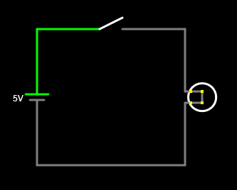

1. Switch and button¶
In this practice we will simulate a circuit that lights a lamp with a switch and another circuit that lights a lamp with a button. The switches keep the circuit ON or OFF once they are activated. However, the buttons only keep the circuit ON while they are activated.
The typical applications of the switches are to light a room light, turn on an electrical connection strip or turn on an electrical equipment.
The typical applications of the buttons are to operate the bell of a house, the engine of an electric blender or operate the opening of a portal door.
Switch¶
Simulates with the online simulator the following circuit with switch:

To obtain each of the elements of the circuit, you must look in the Draw or press the corresponding key and click with the mouse on the screen dragging:
| Element | Menu | Key |
|---|---|---|
| Battery | Draw ... Sources ... Add Voltage Source (2 terminals) (Drag the mouse from the bottom up) |
v |
| Switch | Draw ... Control components ... Add switch | s |
| Lamp | Draw ... outputs ... Add lamp | |
| Wire | Draw ... Add electrical connection | w |
Button¶
Simulates with the online simulator the following circuit with a button:
| Element | Menu | Key |
|---|---|---|
| Button | Draw ... Control components ... Add button |
Exercises¶
How does a switch work?
How does a button work?
List two typical applications of a switch and two typical applications of a button.
In the previous circuits it names the following elements used:
Voltage generating element:
Electrical control element:
Electrical receiving element:
Electrical conductment element: